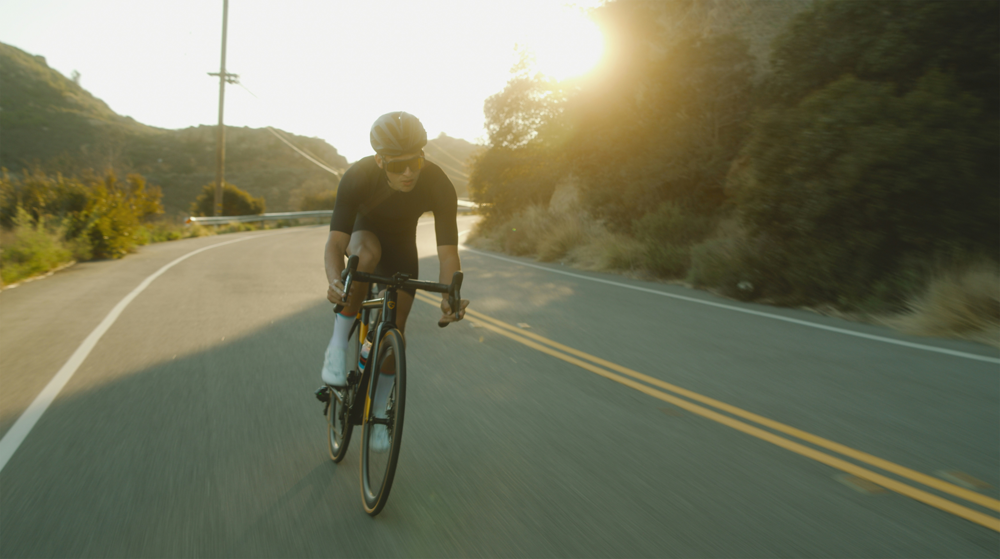

My Take on Cycling Training
![]()

It all started with a new bike
About 2.5 years ago (summer of 2022 to be more precise), I purchased a 2022 BMC Roadmachine Two. At the time, it was a very expensive purchase and over the last 2 years, I’ve upgraded many of the components. Since this was the most expensive bike I ever bought in my life, I told myself that I’m going to get better at cycling. Great! Now how would I go about doing that?
Hire a Coach?
Like many sports, I could work with a coach. I looked up cycling coaches (online and local ones) and I was overwhelmed. First off, hiring a coach is not cheap. Having a coach is a true commitment and a very costly endeavor if you don’t maximize the benefits the coach offers you. And coaches are not your parents; their job is to help you succeed. Ultimately, you - as the athlete - have to put in the work. The coaches that I found were charging anywhere from $250 to well over $1000 per month.
I knew I wasn’t going to train for a race or a cycling event. So I scratched this off my list.
But I learned something
Every coach started off with one question that really got me thinking: “what’s your goal?”
When I first read that question (or variations of it), I didn’t really think about it. My answer would always be “I want to ride my bike fast!” But I didn’t take the time to think about my own goal. What did I really want to do? What about cycling excites me?
What I thought I wanted
Like almost everyone, I just wanted to go blazing fast on my bike. My ideal scenario would be taking a “bike lift” to the top of a big hill/mountain and just riding down at top speed. Or the next best scenario: flat road (absolutely no ups/downs) with no head wind ever and going fast! So yeah, just going fast is what I thought I wanted.
What did I really want?
When I got my bike, I would ride as much as I could. I quickly realized that I was pretty tired out after riding for just 10-15 miles. Sure, I wasn’t fit - that’s why I needed to get better. But I was riding my bike frequently, why wasn’t I getting any better? I also learned that there is a technical term for being tired: bonking.
What I wanted was to be able to ride for 2 - 3 hours without bonking. I wanted to have energy after my bike ride to do household work, spend time with my family, and feel good.
And this changed how I approached my bike rides and changed how I train for my bike rides. The key word that I focused in on was endurance. Endurance is what I needed to work on, develop, and strengthen if I wanted to cycle for hours and having enough energy (or fuel in the tank) after my ride.